La Escuela Granadina de Guitarreros. The Granada School of Guitar-makers.
enfin édité après des années de travail : un ouvrage exceptionnel
Autres
Pour voyager dans le monde fascinant de la guitare et au delà, selon les idées, selon les rencontres, au fil du temps et des événements, des découvertes, parfois même un peu en marge du thème premier de ce site
Vous trouverez ici :
Un coin Boutique avec quelques petites choses intéressantes que nous avons sélectionnées pour vous
Des événements intéressants que nous noterons ici dans notre Agenda
Atelier
atelier de lutherie
toutes réparation, réglages, etc.
sur devis
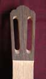
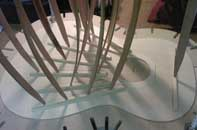
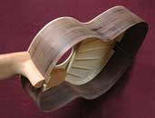
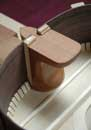
à votre disposition sur Bruxelles et en Midi-Pyrénées :
renseignements sur demande ici par email : Contact ou téléphone
cours guitare classique
cours guitare flamenco
sur Bruxelles et en Midi-Pyrénées ou ailleurs :
renseignements sur demande ici par email : Contact ou téléphone
Livres
enfin édité après des années de travail : un ouvrage exceptionnel
l'incontournable ouvrage de Roy Courtnall
Photographie indisponiblePhotographie — d'autres choses...Ouvrir Guitarreria.eu est partenaire ANIPO >> Protégez votre instrument contre le vol << et plus ! >> Protect your instrument against theft << and more !
ANIPO.org Rejoignez Anipo,le réseau international et solidaire de lutte contre le vol des instruments de musique. Join Anipo, the international and solidarity network for fighting the theft of musical instruments.
Enfin un site dédié à la protection de nos instruments de musique contre le vol, accessible à tous et gratuit. Finally a site dedicated to the protection of our musical instruments against theft, accessible to all and free.
communiquez-nous les événements de la guitare : dans la mesure du possible nous les afficherons ici
du vendredi 20 au mardi 24 avril 2018
7ème édition ... l'événement à Bruxelles !
Brussels International Guitar Festival & Compétition
Voici venue la 7e édition du Brussels International Guitar Festival & Competition, l’événement incontournable et très attendu par les mélomanes et par les aficionados de la guitare en particulier.
Unique en son genre, « la » fête bruxelloise de la guitare attire la grande foule et est parvenue à s’imposer au fil des années comme l’une des principales en Europe. Le splendide Théâtre du Vaudeville, situé en plein cœur de Bruxelles dans les Galeries Royales Saint-Hubert,
accueille des concerts, des spectacles, des master classes, une conférence, une exposition, une comédie musicale pour enfants et pour les écoles ainsi que la finale du concours Brussels International Guitar Competition.
Musique classique, latine, moderne, jazz, pop, musique du monde, spectacle flamenco... Les multiples facettes de l’instrument le plus joué au monde sont mises en valeur à travers un programme riche et varié : guitare en solo, en duo, en ensemble,
avec flûte, avec orchestre, avec poésie… Toujours à l’affût de nouveautés, le festival offre au public la chance d’assister à de nombreuses créations mondiales et premières belges, et d’entendre à la fois de grands noms de la guitare venus de Grèce,
d’Italie, de Cuba, d’Espagne, de France, de Belgique, tout comme de jeunes artistes à l’aube d’une carrière prometteuse et pour lesquels le festival sert de tremplin. La cuvée 2018 rend hommage aux Maîtres Ilse & Nicolas Alfonso, qui ouvrirent les premiers cours de guitare dans les Académies de Musique de Belgique ainsi que la classe de guitare du Conservatoire Royal de Bruxelles en 1965,
devenant ainsi les fondateurs de l’École belge de guitare. Un concert, une exposition et une conférence leur sont consacrés et suite à la disparition récente de Ilse Alfonso, le concours international a été rebaptisé Brussels International Guitar Competition « Ilse & Nicolas Alfonso ».
Cette édition commémore également la disparition d’autres éminents artistes pour lesquels la guitare fut toujours une amie complice : le chanteur belge Jacques Brel, le compositeur italien Mario Castelnuovo-Tedesco et les récitants belges Pascale Mathieu et Charles Kleinberg.
Enfin, le très fréquenté « Salon des Luthiers & Exposants » accueillera le public à la « Maison Grand-Place », située à deux pas du Théâtre du Vaudeville, sur la Grand-Place elle-même, l’un des joyaux de Bruxelles.
Ouverte à tous les publics, néophytes ou avertis, cette édition exceptionnelle sera, plus que jamais, pleine de joie, d’émotions, de découvertes et de fraternité...
Hugues Navez - Président fondateur et Directeur artistique
Professeur titulaire de la classe de guitare du Conservatoire Royal de Bruxelles
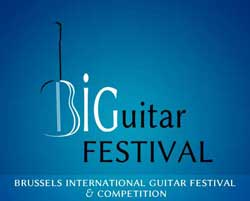
trouvez tous les détail sur le site : bigfest.be
GUITARRERIA .eu , partenaire du festival, sera présent au salon de lutherie
venez y essayer une 30aine de guitares parmi les meilleurs luthiers
et prenez aussi dès à présent rendez-vous pour un essai au calme en dehors du festival
sur le site du festival au salon de lutherie : entrée libre et gratuite : Grand'Place de Bruxelles
samedi 21 et dimanche 22 : de 10h00 à 19h00
ou à Bruxelles, Ixelles : sur rendez-vous privé pour essayer toutes les guitares au calme : du 18 au 29 avril
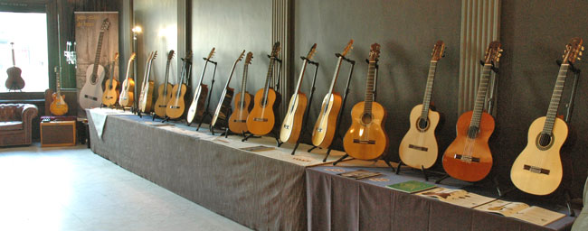
Touts les concerts du BIGuitar FESTIVAL 2018 se dérouleront :
au Théâtre du Vaudeville
Galerie de la Reine, 13
1000 Bruxelles
Le Salon des Luthiers : un lieu exceptionnel Grand'-Place de Bruxelles
Infos complètes sur le site de : www.bigfest.be
" se nos va un gran compañero y un gran artista "
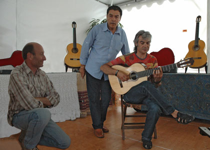
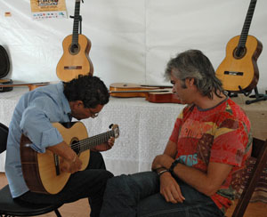
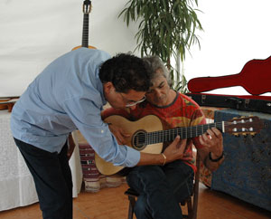
El guitarrista flamenco Enrique Fernández Muñoz, conocido como Quique Paredes,
ha fallecido en Sevilla, a los 62 años
J'ai eu le plaisir et l'honneur de rencontrer à plusieurs reprises cet homme au grand coeur,
je ne l'oublierai jamais
( les photos ici sont de notre rencontre en 2011 à Mont-de-Marsan : Jean-Marc De Beys, Quique Paredes, Antonio Soto )
en savoir plus : lisez l'article publié par Claude Worms
non, ...ce site n'est pas dédié à la rubrique nécrologique mais hélas quand à quelques jours de suite un autre grand nom du monde de la guitare disparaît ...
parmi les plus grands hommes du métier, inventeur émérite, au caractère bien trempé, au coeur plein d'humour
le luthier Bill Collings nous a quitté ce mois de juillet
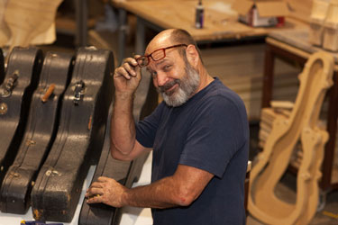
"You have to realise what you want in a guitar and how to get that everytime so you have to work accurately..."
Bill, luthier d'excellence, savait de quoi il parlait !
du vendredi 21 au mardi 25 avril 2017 : 6ème édition du " BIGuitar FESTIVAL "
... l'événement à Bruxelles !
Brussels International Guitar Festival & Compétition - 6e édition -
Incontournable pour tous les aficionados de la guitare, le Brussels International Guitar Festival & Competition souffle sa sixième bougie. Le magnifique Théâtre du Vaudeville, situé en plein cœur de Bruxelles dans la Galerie de la Reine, accueille des concerts,
des films, des master classes, des interviews, un spectacle pour enfants et pour les écoles ainsi que la finale du concours national, ouvert à partir de cette année à tous les guitaristes amateurs sans limite d’âge.
Musique classique, latine, moderne, tango argentin, spectacle flamenco... « La » fête bruxelloise de la guitare met en valeur les nombreuses facettes de l’instrument le plus joué au monde à travers un programme riche et varié : la première belge du Concierto para una Fiesta avec orchestre de Joaquín Rodrigo,
le Concierto Andaluz pour quatre guitares, de la guitare en solo, en duo, en quatuor, en ensemble, avec violon… Cette édition commémore les 50 ans de la disparition de la grande virtuose française Ida Presti et lui rend hommage en présentant en première mondiale des archives exceptionnelles : deux concerts filmés du duo mythique Ida Presti & Alexandre Lagoya et des interviews inédites.
Toujours à l’affût de nouveautés, le festival permet au public d’assister, pour la première fois en Belgique, à la projection du film « Mangoré, por Amor al Arte » consacré au grand compositeur et guitariste paraguayen Agustín Barrios.
Enfin, le très fréquenté « Salon des Luthiers & Exposants » accueillera le public à la « Maison Grand-Place », située à deux pas du Théâtre du Vaudeville, sur la Grand-Place elle-même, l’un des joyaux de Bruxelles.
Ouverte à tous les publics, néophytes ou avertis, cette cuvée exceptionnelle sera, plus que jamais, pleine de joie, d’émotions, de découvertes et de fraternité...
Hugues Navez - Président fondateur et Directeur artistique
Professeur titulaire de la classe de guitare du Conservatoire Royal de Bruxelles
Programme : trouvez tous les détail sur le site : bigfest.be
GUITARRERIA .eu , partenaire du festival, sera présent au salon de lutherie
venez y essayer une 30aine de guitares parmi les meilleurs luthiers
et prenez aussi dès à présent rendez-vous pour un essai au calme en dehors du festival
sur le site du festival au salon de lutherie : entrée libre et gratuite : Grand'Place de Bruxelles
samedi 23 et dimanche 24 : de 10h00 à 19h30
ou à Bruxelles, Ixelles : sur rendez-vous privé pour essayer toutes les guitares au calme : du 18 avril au +/-7 mai
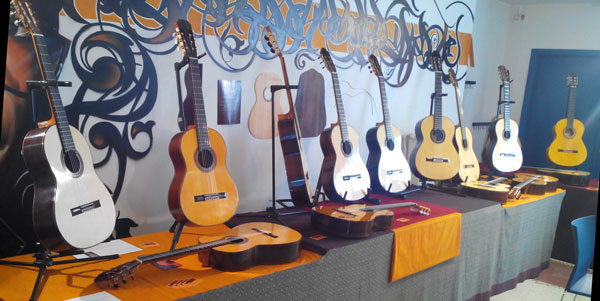
Touts les concerts du BIGuitar FESTIVAL 2017 se dérouleront :
au Théâtre du Vaudeville
Galerie de la Reine, 13
1000 Bruxelles
Le Salon des Luthiers a lieu dans un lieu exceptionnel Grand'-Place de Bruxelles
Infos complètes sur le site de : www.bigfest.be
La vente des tickets :
le nombre de places étant limité, il est conseillé d’acheter les tickets à l’avance
vous trouverez toutes les infos sur le site site du festival : tickets
du vendredi 22 au mardi 26 avril 2016 : 5ème édition du " BIGuitar FESTIVAL "
... l'événement à Bruxelles !
Brussels International Guitar Festival & Compétition - 5e édition - Sous le Haut Patronage de Sa Majesté la Reine
Devenu incontournable pour tous les aficionados de la guitare,le Brussels International Guitar Festival & Competition souffle sa cinquième bougie. Un nouveau lieu, le magnifique Théâtre du Vaudeville situé en plein cœur de Bruxelles dans la Galerie de la Reine,
accueille des concerts, des master classes, des interviews, un spectacle pour enfants et pour les écoles, des luthiers, des exposants, ainsi que la finale du concours international.
Musique classique, latine, moderne, tango argentin, jazz manouche... « la » fête bruxelloise de la guitare met en valeur les nombreuses facettes de l’instrument le plus joué au monde à travers un programme riche et varié : le célèbre Concierto de Aranjuez avec orchestre,
le Concierto Madrigal pour deux guitares, de la guitare en solo, trio, quartet, en ensemble, avec harpe ou quatuor à cordes. Et pour célébrer avec faste les 50 ans de la création de la classe de guitare du Conservatoire Royal de Bruxelles fondée par Nicolas Alfonso,
le festival propose un concert de gala additionnel avec la création mondiale du concerto pour guitare et orchestre de Michel Lysight. Ouverte à tous les publics, néophytes ou avertis, cette cuvée exceptionnelle sera, plus que jamais, pleine de joie,
d’émotions, de découvertes et de fraternité...
Hugues Navez - Président fondateur et Directeur artistique
Professeur titulaire de la classe de guitare du Conservatoire Royal de Bruxelles
Programme : trouvez tous les détail sur le site : bigfest.be
GUITARRERIA .eu , partenaire du festival, sera présent au salon de lutherie
venez y essayer une 30aine de guitares parmi les meilleurs luthiers
et prenez aussi dès à présent rendez-vous pour un essai au calme en dehors du festival
sur le site du festival au salon de lutherie : entrée libre et gratuite :
vendredi 22 : de 18h00 à 19h30
samedi 23 et dimanche 24 : de 10h00 à 19h30
ou à Bruxelles, Ixelles : sur rendez-vous privé pour essayer toutes les guitares au calme : du 20 avril au +/-1 mai
Toutes les activités du BIGuitar FESTIVAL 2016 se dérouleront :
AU THÉÂTRE DU VAUDEVILLE
Galerie de la Reine, 13
1000 Bruxelles
un lieu exceptionnel situé au coeur de Bruxelles à deux pas de la Grand'-Place de Bruxelles
Infos complètes sur le site de : www.bigfest.be
La vente des tickets :
le nombre de places étant limité, il est conseillé d’acheter les tickets à l’avance
vous trouverez toutes les infos sur le site site du festival : tickets
concert exceptionnel le samedi 12 mars 2016
Création mondiale du Concerto pour guitare de Michel Lysight
Orchestre National de Belgique, sous la direction de Dirk Brossé
Hugues Navez, guitare (Belgique)
Création mondiale du Concerto pour guitare de Michel Lysight
et œuvres de Piazzolla, Bizet, de Falla, Marquez, Brossé…
À l’occasion des 50 ans de la classe de guitare du Conservatoire Royal de Bruxelles, Hugues Navez interprète en première mondiale le concerto pour guitare du compositeur belgo-canadien Michel Lysight qui lui est dédié.
Ce dernier est membre de la New Consonant Music, un courant qui souhaite combler le fameux « fossé » entre les compositeurs contemporains et le public. Sous la direction de Dirk Brossé, l’Orchestre National de Belgique offre également quelques-unes des plus belles pages d’un répertoire très latin : de Falla,
Bizet, Marquez, Piazzolla…
Au Conservatoire Royal de Bruxelles
Rue de la Régence, 30
1000 Bruxelles
Infos complètes sur le site de : www.bigfest.be
Vente des tickets : 15 EUR (prix unique - places non numérotées) -- le nombre de places étant limité, il est conseillé d’acheter les tickets à l’avance -- en ligne sur le site du festival
ou sur place le 12 mars 2016 Conservatoire Royal de Bruxelles ouverture de la billetterie : une heure avant le concert paiement en espèces uniquement, les chèques et cartes ne sont pas acceptés
samedi 19 et 20 mars 2016
exposition de lutherie " The best of italian Guitar Makers and Companies "
concert exceptionnel de Pavel Steidl le samedi 19 à 20h
GUITARRERIA .eu , invité du festival, sera présent au salon de lutherie
L’Associazione Chitarra In nasce da un idea di Gabriele Curciotti e Massimo di Coste con l’obiettivo di promuovere la cultura chitarristica e la musica in tutte le sue forme attraverso l’organizzazione di eventi musicali, corsi, Masterclass,
concerti, mostre e ogni altra attività diretta alla conoscenza e alla diffusione della musica e dell’arte fra tutte le classi sociali. L’Associazione ha inoltre l’obiettivo di sostenere la liuteria come fondamentale ricchezza culturale artistica italiana,
sostenendo e promuovendo la creazione di una cooperazione e collaborazione intellettuale ed operativa tra i vari Maestri artigiani.
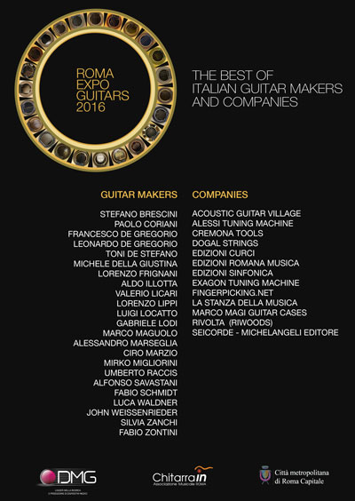
Roma Eventi – Fontana di Trevi
situato nel cuore di Roma in Piazza della Pilotta n. 4, a pochi metri da Fontana di Trevi e da P.zza Venezia.
Infos complètes sur le site de : www.romaexpoguitars.com
nous avons le plaisir de vous annoncer la 4ème édition du " BIGuitar FESTIVAL "
... l'événement à Bruxelles du vendredi 24 au mardi 28 avril 2015 !
Brussels International Guitar Festival & Compétition - 4e édition - Sous le Haut Patronage de Sa Majesté la Reine
Durant cinq jours, Bruxelles, capitale de la Belgique et de l’Europe, accueille quelques-uns des plus grands guitaristes internationaux, dont certains s’y produisent pour la toute première fois.
Musique classique, baroque, moderne, jazz, espagnole, latino-américaine… Le festival met en valeur les multiples facettes et le répertoire varié de l’instrument le plus populaire au monde.
Onze concerts autour de la guitare classique (en solo, duo, quatuor, ensemble, avec flûte, chant, percussions, piano et violoncelle), un spectacle spécialement destiné aux enfants, un récital de théorbe et guitare baroque, et la représentation exceptionnelle du Romancero Gitano de Tedesco pour chœur mixte et guitare feront vibrer le magnifique Espace Magh,
en plein centre de la ville. Sont également au programme : sept masterclasses, deux conférences (l’une sur le compositeur espagnol Joaquin Turina, l’autre consacrée à la légendaire virtuose Ida Presti), un Salon de Lutherie et le Brussels National Guitar Competition "Nicolas Alfonso" dont la finale se déroulera lors du festival.
Centrée à la fois sur la tradition et la modernité, la quatrième édition de cet événement devenu incontournable pour tous les amoureux de la guitare s’annonce particulièrement riche et innovante...
Hugues Navez - Président fondateur et Directeur artistique
Professeur titulaire de la classe de guitare du Conservatoire Royal de Bruxelles
Programme : trouvez tous les détail sur le site : bigfest.be
GUITARRERIA .eu , partenaire du festival, sera présent au salon de lutherie
venez y essayer une 30aine de guitares parmi les meilleurs luthiers
et prenez aussi dès à présent rendez-vous pour un essai au calme en dehors du festival
sur le site du festival au salon de lutherie : entrée libre et gratuite ouvert de 14h00 à 19h45 du vendredi 24 au mardi 28 avril
ou à Bruxelles, Ixelles : sur rendez-vous privé pour essayer toutes les guitares au calme : du 20 avril au +/-5 mai
Toutes les activités du BIGuitar FESTIVAL 2015 se dérouleront à
l’Espace Magh
situé au coeur de Bruxelles à deux pas de la Grand'-Place de Bruxelles et du "Manneken-Pis"
Infos complètes sur le site de : www.bigfest.be
La vente des tickets :
le nombre de places étant limité, il est conseillé d’acheter les tickets à l’avance
soit en ligne sur le site du festival soit physiquement
à la boutique Azzato à Bruxelles
... pour que notre libre conscience n'oublie pas ce jour quelque soit notre opinion
pour que toutes les musiques du monde puissent continuer à nous faire sourire et rêver ...
...
"je chante persite et signe" comme disait un belge célèbre (Jacques Brel)
nous avons le plaisir de vous annoncer la troisième édition du " BIGuitar FESTIVAL "
... l'événement à Bruxelles du vendredi 25 au mardi 29 avril 2014 !
Voici déjà la troisième édition de cet événement unique, devenu l’incontournable rendez-vous des amoureux de la guitare en Belgique et à Bruxelles, la capitale de l’Europe.
Dans le superbe Espace Magh, en plein cœur de la ville, le festival 2014 propose une série de concerts autour de la guitare classique centrés sur le voyage et le dialogue des cultures.
Sont également au programme : des master classes, des conférences, un salon de lutherie et enfin, la création du Brussels International Guitar Competition "Nicolas Alfonso" dont la finale se déroulera lors du festival.
Sous les doigts d’artistes de tous horizons et de réputation internationale, la guitare classique, à six, dix ou treize cordes, tantôt en solo, duo, quatuor ou ensemble, tantôt associée au flamenco, au jazz, à la musique arabo-andalouse ou à l’oud,
fera vibrer le public, qu’il soit néophyte ou averti, durant cinq jours de fête...
Hugues Navez - Président fondateur et Directeur artistique
Programme : trouvez tous les détail sur le site : bigfest.be
GUITARRERIA .eu , partenaire du festival, sera présent au salon de lutherie
venez y essayer une 30aine de guitares parmi les meilleurs luthiers
et prenez aussi dès à présent rendez-vous pour un essai au calme en dehors du festival
sur le site du festival au salon de lutherie : entrée libre et gratuite ouvert de 14h00 à 19h45 du vendredi 25 au mardi 29 avril
ou à Bruxelles : sur rendez-vous privé du ~20 avril au 10 mai
Toutes les activités du BIGuitar FESTIVAL 2014 se dérouleront à
l’Espace Magh
situé au coeur de Bruxelles à deux pas de la Grand'-Place de Bruxelles et du "Manneken-Pis"
Infos complètes sur le site de : www.bigfest.be
La vente des tickets :
le nombre de places étant limité, il est conseillé d’acheter les tickets à l’avance
soit en ligne sur le site du festival soit physiquement
à la boutique Azzato à Bruxelles
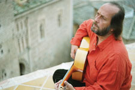
Cante : Carmen Linares
Toque : Eduardo Pacheco & Pedro Barragán
Palmas & Coros : Ana Maria Gonzalez & Rosario Amador
12/12/2013 : France : Le Rocher de Palmer, Cenon (Bordeaux) toutes les infos : cliquez ici
13-12-2013 : Belgique : De Singel, Antwerpen toutes les infos : cliquez ici
"Rencontres de Maîtres" du Centrum voor Muziekinstrumentenbouw à Puurs - Belgique
Kasteel d'Ursel, Hingene, Belgïe lieu : cliquez ici
Vrijdag 15 nov 2013 - 20u30 - Vendredi 15 nov 2013 à 20h30
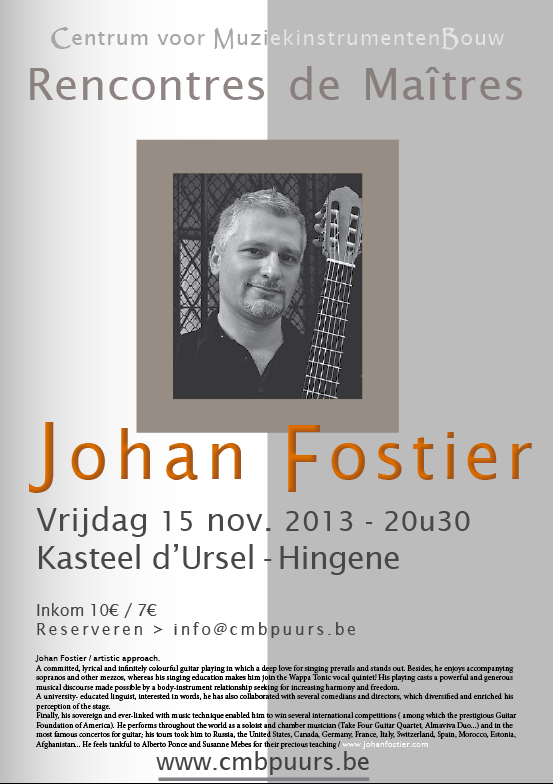
Toegang 10€ / 7€ - Reserveren > info@cmbpuurs.be
nous avons le plaisir de vous annoncer la deuxième édition du " BIGuitar FESTIVAL "
... l'événement à Bruxelles du vendredi 26 au mardi 30 avril 2013 !
L’unique rendez-vous annuel des aficionados de la guitare dans la capitale de l’Europe souffle sa deuxième bougie. Après le franc succès de l’année dernière, c’est dans un tout nouveau décor en plein cœur de Bruxelles, l' ESPACE MAGH, que l’édition 2013 propose des concerts,
des masterclasses, des conférences, un salon de lutherie mais aussi la création du “Concours Nicolas Alfonso” pour célébrer le centenaire de la naissance du virtuose espagnol.
Durant cinq jours, des artistes de renommée internationale, certains pour la première fois en Belgique, déclineront la guitare en solo, duo, trio, quatuor, ensemble, avec flûte, violon ou orchestre de chambre.
Latine, baroque, classique, romantique, espagnole ou moderne, la guitare dévoilera ses multiples facettes dans une ambiance chaleureuse et conviviale pour un public en quête de découverte, de partage, de rêve et d’émotion...
Hugues Navez - Président fondateur et Directeur artistique
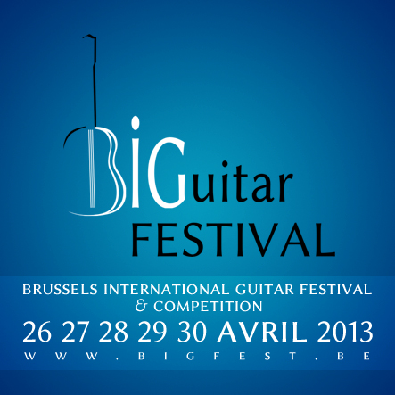
Programme :
partenaire du festival sera présent au salon de lutherie
entrée libre et gratuite ouvert de 14h00 à 19h45 du vendredi 26 au mardi 30 avril
... ne tardez pas à réserver vos places pour les concerts ... certains sont soldout !
Vendredi 26 avril
14h00 masterclasse J.M. Gallardo del Rey
18h00 rencontres luthiers
20h00 concert en trois parties : Leon Koudelak - Valérie Duchâteau - Duo Bernold Rossfelder
Samedi 27 avril
09h30 masterclasse Leon Koudelak
15h00 concert Dúo Reyana
16h30 conférence Manuel Maria Ponce
18h00 rencontres luthiers
20h00 concert en deux parties : Accords Guitar Trio - Ana Vidovic
Dimanche 28 avril
09h30 masterclasse Ana Vidovic
15h00 concert Zagreb Guitar Quartet
16h30 conférence Nicolas Alfonso
18h00 rencontres luthiers
20h00 concert en deux parties : Duo Cordes & Âmes - Duo Mariotti Navez & Brussels Camerata
Lundi 29 avril
09h30 masterclasse Galina Vale
15h00 finale Nicolas Alfonso Competition
18h00 rencontres luthiers
20h00 concert en deux parties : Duo Cord'Azur - Gérard Abiton
Mardi 30 avril
09h30 masterclasse Gérard Abiton
14h00 masterclasse Valérie Duchâteau
18h00 rencontres luthiers
20h00 concert en deux parties : Ensemble Conservatoire Royal de Bruxelles - Galina Vale
Toutes les activités du BIGuitar FESTIVAL 2013 se dérouleront à l’Espace Magh
situé au coeur de Bruxelles à deux pas de la Grand'-Place de Bruxelles et du "Manneken-Pis"
Infos complètes sur le site de : www.bigfest.be
La vente des tickets :
le nombre de places étant limité, il est conseillé d’acheter les tickets à l’avance
soit en ligne sur le site du festival soit physiquement
à la boutique Azzato à Bruxelles
Afin d'alléger cette page devenue lourde et parfois obsolète au fil des années mais pour néanmoins conserver une trace de ces événements passés
retrouvez tous ces anciens événements et infos
en visitant la page "archives de la page Autres" depuis ce lien